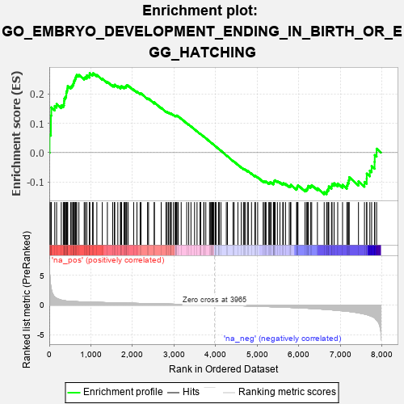
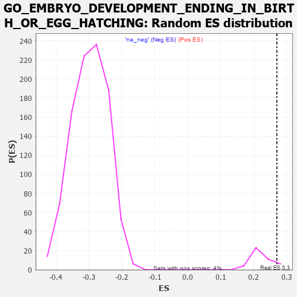

| | | Dataset | 7d |
| Phenotype | NoPhenotypeAvailable |
| Upregulated in class | na_pos |
| GeneSet | GO_EMBRYO_DEVELOPMENT_ENDING_IN_BIRTH_OR_EGG_HATCHING |
| Enrichment Score (ES) | 0.27041128 |
| Normalized Enrichment Score (NES) | 1.2028457 |
| Nominal p-value | 0.13636364 |
| FDR q-value | 0.48757252 |
| FWER p-Value | 1.0 |
Table: GSEA Results Summary

Fig 1: Enrichment plot: GO_EMBRYO_DEVELOPMENT_ENDING_IN_BIRTH_OR_EGG_HATCHING
Profile of the Running ES Score & Positions of GeneSet Members on the Rank Ordered List
| PROBE | GENE SYMBOL | GENE_TITLE | RANK IN GENE LIST | RANK METRIC SCORE | RUNNING ES | CORE ENRICHMENT | | 1 | ST14 | | | 7 | 5.713 | 0.0613 | Yes |
| 2 | MEOX1 | | | 39 | 3.159 | 0.0917 | Yes |
| 3 | SIX2 | | | 40 | 3.152 | 0.1261 | Yes |
| 4 | TGFB3 | | | 49 | 2.654 | 0.1539 | Yes |
| 5 | SP3 | | | 131 | 1.391 | 0.1587 | Yes |
| 6 | FOXF1 | | | 176 | 1.136 | 0.1654 | Yes |
| 7 | SHOX2 | | | 288 | 0.842 | 0.1604 | Yes |
| 8 | DLL1 | | | 337 | 0.760 | 0.1625 | Yes |
| 9 | TAPT1 | | | 354 | 0.743 | 0.1685 | Yes |
| 10 | ARNT | | | 357 | 0.741 | 0.1763 | Yes |
| 11 | HUS1 | | | 362 | 0.735 | 0.1838 | Yes |
| 12 | AXIN2 | | | 383 | 0.713 | 0.1890 | Yes |
| 13 | NBN | | | 405 | 0.696 | 0.1939 | Yes |
| 14 | OCRL | | | 408 | 0.691 | 0.2012 | Yes |
| 15 | ALX4 | | | 413 | 0.686 | 0.2081 | Yes |
| 16 | CCNB2 | | | 429 | 0.672 | 0.2135 | Yes |
| 17 | RRN3 | | | 438 | 0.667 | 0.2198 | Yes |
| 18 | SUFU | | | 443 | 0.665 | 0.2265 | Yes |
| 19 | CNOT2 | | | 514 | 0.625 | 0.2243 | Yes |
| 20 | SRF | | | 542 | 0.615 | 0.2276 | Yes |
| 21 | NLE1 | | | 565 | 0.609 | 0.2314 | Yes |
| 22 | CCNB1 | | | 581 | 0.601 | 0.2360 | Yes |
| 23 | ALX1 | | | 590 | 0.598 | 0.2415 | Yes |
| 24 | FBXW8 | | | 601 | 0.594 | 0.2467 | Yes |
| 25 | TAF8 | | | 622 | 0.587 | 0.2505 | Yes |
| 26 | GLMN | | | 632 | 0.583 | 0.2557 | Yes |
| 27 | SMG9 | | | 643 | 0.579 | 0.2607 | Yes |
| 28 | HES5 | | | 661 | 0.571 | 0.2647 | Yes |
| 29 | VASH1 | | | 712 | 0.556 | 0.2644 | Yes |
| 30 | TFEB | | | 839 | 0.522 | 0.2539 | Yes |
| 31 | ASF1B | | | 863 | 0.515 | 0.2566 | Yes |
| 32 | NSUN2 | | | 901 | 0.506 | 0.2573 | Yes |
| 33 | HCFC1 | | | 902 | 0.506 | 0.2628 | Yes |
| 34 | CTR9 | | | 964 | 0.492 | 0.2604 | Yes |
| 35 | ZPR1 | | | 967 | 0.491 | 0.2655 | Yes |
| 36 | DVL3 | | | 971 | 0.490 | 0.2704 | Yes |
| 37 | AKT1 | | | 1040 | 0.476 | 0.2669 | No |
| 38 | MEF2C | | | 1054 | 0.473 | 0.2704 | No |
| 39 | EMX1 | | | 1143 | 0.455 | 0.2640 | No |
| 40 | CNOT3 | | | 1274 | 0.435 | 0.2521 | No |
| 41 | SSBP3 | | | 1396 | 0.411 | 0.2411 | No |
| 42 | LIAS | | | 1524 | 0.387 | 0.2290 | No |
| 43 | DHX35 | | | 1563 | 0.381 | 0.2283 | No |
| 44 | FZD1 | | | 1574 | 0.379 | 0.2311 | No |
| 45 | RXRA | | | 1647 | 0.365 | 0.2258 | No |
| 46 | ERCC2 | | | 1712 | 0.354 | 0.2215 | No |
| 47 | PLOD3 | | | 1715 | 0.353 | 0.2251 | No |
| 48 | RTCB | | | 1739 | 0.347 | 0.2259 | No |
| 49 | THOC2 | | | 1796 | 0.338 | 0.2224 | No |
| 50 | MSH2 | | | 1819 | 0.334 | 0.2232 | No |
| 51 | RTF1 | | | 1844 | 0.329 | 0.2237 | No |
| 52 | TCF7 | | | 1848 | 0.328 | 0.2269 | No |
| 53 | SMAD4 | | | 1860 | 0.326 | 0.2291 | No |
| 54 | CUL3 | | | 1893 | 0.321 | 0.2284 | No |
| 55 | NSRP1 | | | 2028 | 0.301 | 0.2145 | No |
| 56 | BMP7 | | | 2107 | 0.290 | 0.2077 | No |
| 57 | UBE2A | | | 2183 | 0.278 | 0.2011 | No |
| 58 | HM13 | | | 2205 | 0.276 | 0.2014 | No |
| 59 | SIN3A | | | 2361 | 0.251 | 0.1843 | No |
| 60 | PELO | | | 2386 | 0.247 | 0.1839 | No |
| 61 | SALL4 | | | 2523 | 0.223 | 0.1689 | No |
| 62 | MBD3 | | | 2524 | 0.223 | 0.1713 | No |
| 63 | KDM6A | | | 2690 | 0.200 | 0.1523 | No |
| 64 | BRK1 | | | 2805 | 0.183 | 0.1397 | No |
| 65 | RIC8A | | | 2833 | 0.179 | 0.1382 | No |
| 66 | WDTC1 | | | 2865 | 0.172 | 0.1361 | No |
| 67 | FGFR2 | | | 2895 | 0.167 | 0.1342 | No |
| 68 | ELL | | | 2921 | 0.163 | 0.1327 | No |
| 69 | ACVR1 | | | 2932 | 0.161 | 0.1332 | No |
| 70 | PCSK5 | | | 2983 | 0.152 | 0.1284 | No |
| 71 | BRCA2 | | | 3024 | 0.146 | 0.1249 | No |
| 72 | LEF1 | | | 3037 | 0.144 | 0.1249 | No |
| 73 | BIRC6 | | | 3047 | 0.143 | 0.1253 | No |
| 74 | KEAP1 | | | 3063 | 0.141 | 0.1250 | No |
| 75 | RBBP6 | | | 3066 | 0.141 | 0.1262 | No |
| 76 | CUL4A | | | 3097 | 0.137 | 0.1239 | No |
| 77 | PAX6 | | | 3170 | 0.127 | 0.1160 | No |
| 78 | SMAD3 | | | 3303 | 0.105 | 0.1002 | No |
| 79 | TAB1 | | | 3351 | 0.097 | 0.0953 | No |
| 80 | MED1 | | | 3405 | 0.089 | 0.0894 | No |
| 81 | UNK | | | 3491 | 0.079 | 0.0794 | No |
| 82 | FUT8 | | | 3551 | 0.067 | 0.0726 | No |
| 83 | NOLC1 | | | 3623 | 0.056 | 0.0641 | No |
| 84 | ACSL4 | | | 3632 | 0.055 | 0.0636 | No |
| 85 | SBDS | | | 3640 | 0.053 | 0.0633 | No |
| 86 | NF1 | | | 3713 | 0.040 | 0.0545 | No |
| 87 | HSF1 | | | 3718 | 0.039 | 0.0544 | No |
| 88 | SKI | | | 3762 | 0.032 | 0.0493 | No |
| 89 | ITPK1 | | | 3851 | 0.020 | 0.0382 | No |
| 90 | NEK2 | | | 3871 | 0.016 | 0.0359 | No |
| 91 | NIPBL | | | 3900 | 0.010 | 0.0324 | No |
| 92 | JAG2 | | | 3903 | 0.010 | 0.0323 | No |
| 93 | MED21 | | | 3917 | 0.007 | 0.0307 | No |
| 94 | HINFP | | | 3920 | 0.006 | 0.0305 | No |
| 95 | CCM2 | | | 3933 | 0.005 | 0.0290 | No |
| 96 | EXT1 | | | 3954 | 0.001 | 0.0265 | No |
| 97 | EYA1 | | | 3987 | -0.006 | 0.0224 | No |
| 98 | BTF3 | | | 3994 | -0.007 | 0.0217 | No |
| 99 | SYF2 | | | 4008 | -0.009 | 0.0202 | No |
| 100 | SFRP2 | | | 4065 | -0.018 | 0.0132 | No |
| 101 | TCF15 | | | 4077 | -0.020 | 0.0120 | No |
| 102 | WNT2 | | | 4084 | -0.021 | 0.0115 | No |
| 103 | ABL1 | | | 4125 | -0.027 | 0.0066 | No |
| 104 | PAX5 | | | 4255 | -0.051 | -0.0094 | No |
| 105 | WNT11 | | | 4282 | -0.056 | -0.0121 | No |
| 106 | RALA | | | 4416 | -0.079 | -0.0283 | No |
| 107 | SETD2 | | | 4443 | -0.084 | -0.0307 | No |
| 108 | PLPP4 | | | 4533 | -0.101 | -0.0410 | No |
| 109 | GATA3 | | | 4614 | -0.120 | -0.0500 | No |
| 110 | FOXD3 | | | 4667 | -0.132 | -0.0552 | No |
| 111 | PTK7 | | | 4687 | -0.136 | -0.0562 | No |
| 112 | LHX2 | | | 4716 | -0.143 | -0.0582 | No |
| 113 | PLCG1 | | | 4770 | -0.151 | -0.0634 | No |
| 114 | RTN4 | | | 4783 | -0.154 | -0.0632 | No |
| 115 | DLG1 | | | 4860 | -0.169 | -0.0711 | No |
| 116 | EP300 | | | 4941 | -0.186 | -0.0793 | No |
| 117 | PRKDC | | | 4955 | -0.189 | -0.0790 | No |
| 118 | DAD1 | | | 5008 | -0.199 | -0.0835 | No |
| 119 | FLCN | | | 5140 | -0.235 | -0.0977 | No |
| 120 | TBX1 | | | 5166 | -0.241 | -0.0983 | No |
| 121 | SMO | | | 5195 | -0.247 | -0.0992 | No |
| 122 | ATM | | | 5210 | -0.249 | -0.0983 | No |
| 123 | CELF4 | | | 5275 | -0.266 | -0.1036 | No |
| 124 | FKBP8 | | | 5296 | -0.270 | -0.1032 | No |
| 125 | EPN1 | | | 5304 | -0.272 | -0.1011 | No |
| 126 | UBR3 | | | 5332 | -0.281 | -0.1015 | No |
| 127 | FZD5 | | | 5386 | -0.292 | -0.1052 | No |
| 128 | MGAT1 | | | 5395 | -0.294 | -0.1030 | No |
| 129 | PLK4 | | | 5397 | -0.295 | -0.0999 | No |
| 130 | SOX8 | | | 5404 | -0.296 | -0.0974 | No |
| 131 | LATS1 | | | 5412 | -0.298 | -0.0951 | No |
| 132 | CIR1 | | | 5430 | -0.302 | -0.0940 | No |
| 133 | STIL | | | 5483 | -0.314 | -0.0972 | No |
| 134 | FGFR1 | | | 5543 | -0.332 | -0.1012 | No |
| 135 | CPT2 | | | 5611 | -0.348 | -0.1060 | No |
| 136 | ROR2 | | | 5626 | -0.353 | -0.1040 | No |
| 137 | CASP8 | | | 5678 | -0.369 | -0.1065 | No |
| 138 | ELF3 | | | 5768 | -0.396 | -0.1136 | No |
| 139 | ADA | | | 5798 | -0.405 | -0.1129 | No |
| 140 | BBS4 | | | 5806 | -0.407 | -0.1093 | No |
| 141 | PCGF2 | | | 5943 | -0.451 | -0.1219 | No |
| 142 | PRDM1 | | | 5956 | -0.457 | -0.1184 | No |
| 143 | B9D1 | | | 5962 | -0.459 | -0.1141 | No |
| 144 | GABPA | | | 5977 | -0.464 | -0.1108 | No |
| 145 | STK4 | | | 6145 | -0.518 | -0.1266 | No |
| 146 | KLF2 | | | 6182 | -0.532 | -0.1254 | No |
| 147 | MYO1E | | | 6200 | -0.537 | -0.1218 | No |
| 148 | SMAD2 | | | 6216 | -0.541 | -0.1178 | No |
| 149 | TPM1 | | | 6226 | -0.545 | -0.1130 | No |
| 150 | IFT52 | | | 6280 | -0.566 | -0.1136 | No |
| 151 | IFT57 | | | 6307 | -0.579 | -0.1107 | No |
| 152 | SF3B6 | | | 6444 | -0.637 | -0.1212 | No |
| 153 | MKS1 | | | 6607 | -0.715 | -0.1342 | No |
| 154 | TMED2 | | | 6665 | -0.746 | -0.1334 | No |
| 155 | VASH2 | | | 6680 | -0.752 | -0.1270 | No |
| 156 | EGFR | | | 6708 | -0.765 | -0.1221 | No |
| 157 | DMRT2 | | | 6718 | -0.768 | -0.1149 | No |
| 158 | C2CD3 | | | 6783 | -0.802 | -0.1144 | No |
| 159 | WDR19 | | | 6796 | -0.812 | -0.1070 | No |
| 160 | PTH1R | | | 6845 | -0.839 | -0.1041 | No |
| 161 | MIB1 | | | 6932 | -0.890 | -0.1054 | No |
| 162 | MYH10 | | | 7048 | -0.966 | -0.1096 | No |
| 163 | WDR60 | | | 7153 | -1.038 | -0.1117 | No |
| 164 | AR | | | 7169 | -1.046 | -0.1022 | No |
| 165 | OVOL2 | | | 7197 | -1.068 | -0.0940 | No |
| 166 | MFN2 | | | 7208 | -1.081 | -0.0836 | No |
| 167 | LHX1 | | | 7431 | -1.305 | -0.0978 | No |
| 168 | TTPA | | | 7575 | -1.516 | -0.0997 | No |
| 169 | PKD1 | | | 7628 | -1.611 | -0.0888 | No |
| 170 | PDCD6 | | | 7630 | -1.615 | -0.0713 | No |
| 171 | ADCY9 | | | 7704 | -1.783 | -0.0613 | No |
| 172 | CASP3 | | | 7747 | -1.902 | -0.0459 | No |
| 173 | TRAF6 | | | 7818 | -2.157 | -0.0314 | No |
| 174 | PKD2 | | | 7822 | -2.167 | -0.0082 | No |
| 175 | ECE1 | | | 7867 | -2.498 | 0.0133 | No |
Table: GSEA details [plain text format]

Fig 2: GO_EMBRYO_DEVELOPMENT_ENDING_IN_BIRTH_OR_EGG_HATCHING: Random ES distribution
Gene set null distribution of ES for GO_EMBRYO_DEVELOPMENT_ENDING_IN_BIRTH_OR_EGG_HATCHING